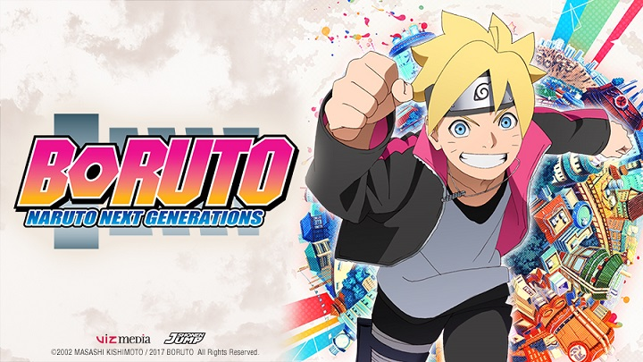

Tonton atau Download "Naruto Shipuden" Subtitle Indonesia

Sinopsis Boruto: Naruto Next Generations
Kamis, 20 Oktober, 2017 pukul 00:21 WIB - dilihat : 3,467,456 Diposting oleh Dunia Anime Indonesia
Naruto adalah seorang ninja muda yang selalu berbuat onar. Meski begitu, dia berhasil menggapai cita-citanya menjadi ninja terhbat di desa dan wajahnya terukir menjadi patung Hokage. Namun serial ini tak lagi mengisahkannya …, ninja generasi baru telah memasuki panggung utama, yang berpusat pada anak Naruto sendiri yaitu Boruto!
| Episode | Judul Episode | Tanggal Posting | Donwload |
|---|---|---|---|
| 1 | Uzumaki Boruto! | 27 Oktober 2017 | donwload |
| 2 | Pertarungan Ninjutsu antar Lawan Jenis! | 03 November 2017 | donwload |
| 3 | Penglihatan dari Sebuah Mimpi! | 03 November 2017 | donwload |
| 4 | Bayangan Dalang Dibalik Semua Kejadian! | 03 November 2017 | donwload |
| 5 | Jalan yang Boruto Lihat | 03 November 2017 | donwload |